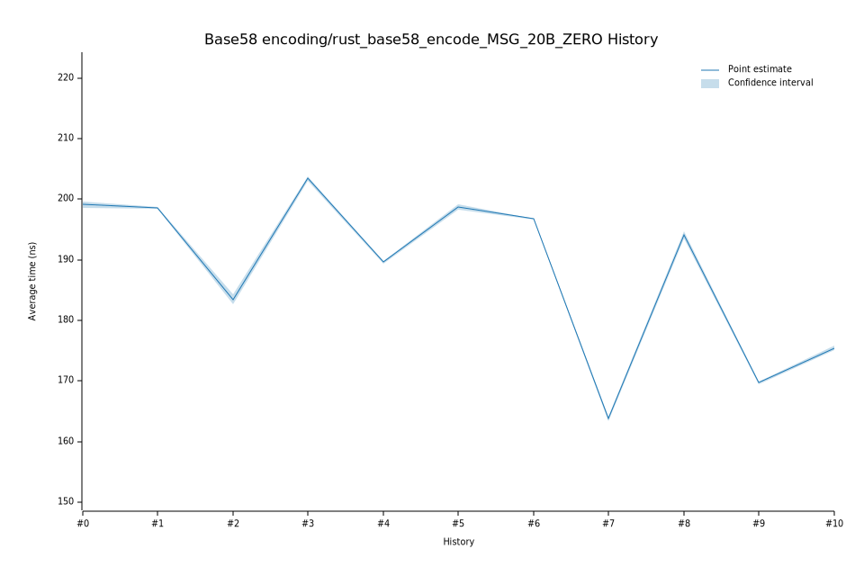

# 32023-02-08T19:29:11Z
|
Lower Bound |
Estimate |
Upper Bound |
| Value: |
203.08ns |
203.46ns |
203.84ns |
| Change in Value: |
+10.391% |
+10.827% |
+11.253% |
No change in performance detected.
# 22022-12-05T09:16:37Z
|
Lower Bound |
Estimate |
Upper Bound |
| Value: |
182.72ns |
183.49ns |
184.35ns |
| Change in Value: |
-7.9888% |
-7.6581% |
-7.3329% |
No change in performance detected.
# 12022-11-14T12:32:12Z
|
Lower Bound |
Estimate |
Upper Bound |
| Value: |
198.45ns |
198.59ns |
198.72ns |
| Change in Value: |
-1.1010% |
-0.8172% |
-0.5347% |
No change in performance detected.
# 02022-11-04T14:08:35Z
|
Lower Bound |
Estimate |
Upper Bound |
| Value: |
198.63ns |
199.13ns |
199.65ns |